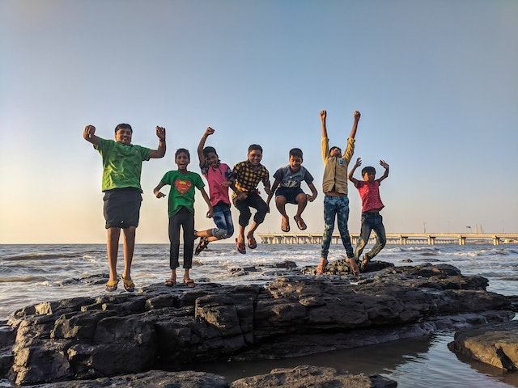
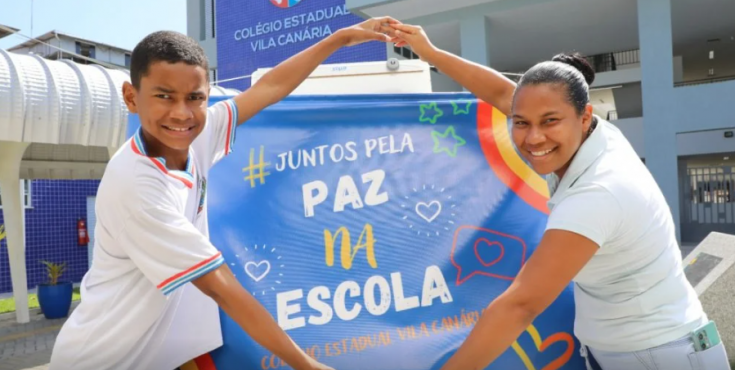
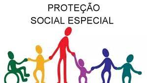

CENTRO DA JUVENTUDE BOM JESUS
O espaço, que fica no bairro Bom Jesus, recebe diariamente dezenas de adolescentes e jovens que
participam de uma série de atividades sociais, culturais e esportivas.
O Centro da Juventude é um espaço aberto de convivência, formação e cidadania para jovens e
adolescentes coordenado pela Secretaria Municipal de Desenvolvimento Social (SMDS).
O Centro da Juventude Bom Jesus fica na Av. Ademar de Barros, 196, no bairro Bom Jesus.
UNIDADE DE ACOLHIMENTO SANTA RITA DE CÁSSIA
Atende crianças e adolescentes, de 0 a 18 anos. Está inserido na rede de serviços da PROTEÇÃO SOCIAL
ESPECIAL DE ALTA COMPLEXIDADE.
Instituição não-governamental, sem fins lucrativos, e, de forma gratuita e continuada, presta serviço de acolhimento institucional para crianças e adolescentes com direitos violados e/ou situação de risco pessoal ou abandono, encaminhados pela Vara da Infância e Adolescência de Campo Largo.
MOVIMENTO RECRIANÇA.

O Movimento Recriança iniciou suas atividades em 1993, com o objetivo único de melhorar a condição de vida da comunidade de Bateias. Assim, o Recriança surge como uma importante opção para o desenvolvimento da comunidade no que diz respeito à educação, cultura e geração de renda. Estrada do Cerne, km 31 - Bateias - Fone: 36481400/999952638